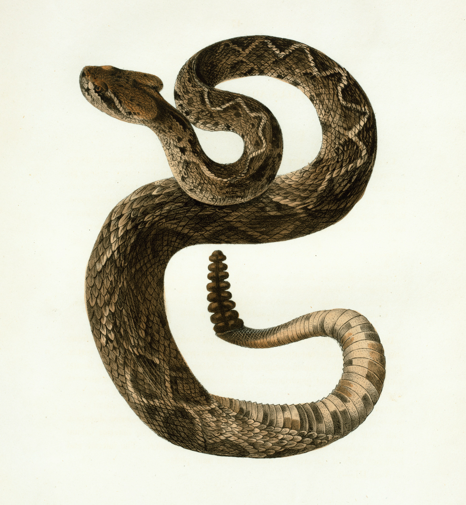

|
Alena Chan I'm a Computer Science student at Columbia University. I am currently working as a SWE intern. |
{kind=link}
Projects... projects description coming ... |
|  |
Stabilizing effect of delay in higher dimensions
Alena Chan arXiv, 2022 arXiv Stabilizing a 3-agent system of linear differential equations by introducing a delayed response. |
|
From Rattle to Roar: Optimizer Showdown for MambaStock on S&P500
Alena Chan arXiv (in progress), 2025 arXiv Designed novel Roaree optimizer that addresses oscillatory training losses of Lion optimizer and preserves fast convergence. Roaree outperformed existing optimizers in stock prediction using Mamba model. |
ResearchI'm interested in mathematical modeling and machine learning. I did some research projects in dynamical system stability, TDA, statistical filtering and optimizers. |
 |
Stabilizing effect of delay in higher dimensions
Alena Chan arXiv, 2022 arXiv Stabilizing a 3-agent system of linear differential equations by introducing a delayed response. |
|
From Rattle to Roar: Optimizer Showdown for MambaStock on S&P500
Alena Chan arXiv (in progress), 2025 arXiv Designed novel Roaree optimizer that addresses oscillatory training losses of Lion optimizer and preserves fast convergence. Roaree outperformed existing optimizers in stock prediction using Mamba model. |
Miscellanea |
|
This template was copied from source code. Photos are from Unsplash. Website is under construction. Last updated July 2025. |